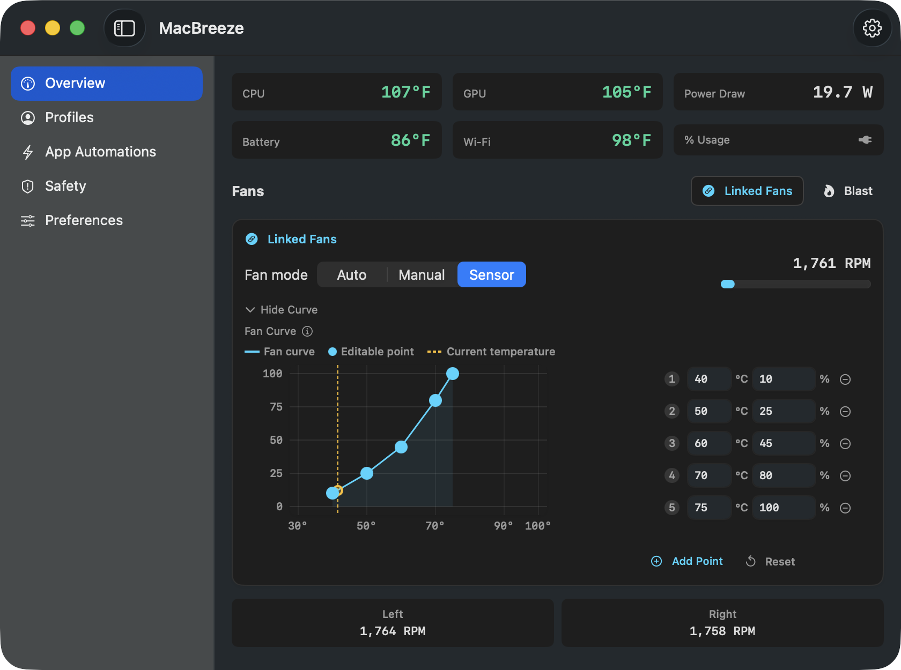
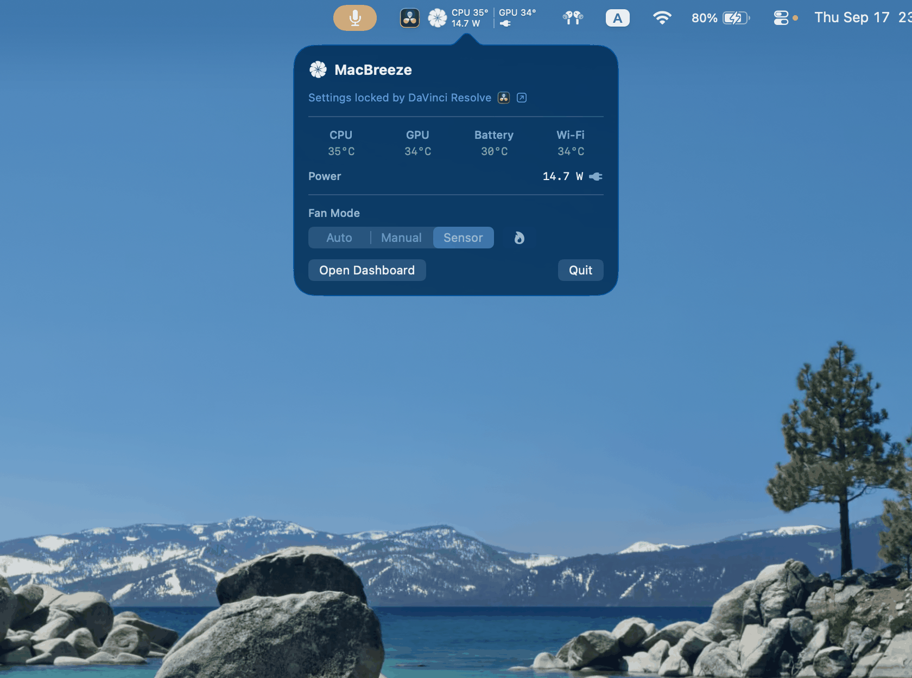
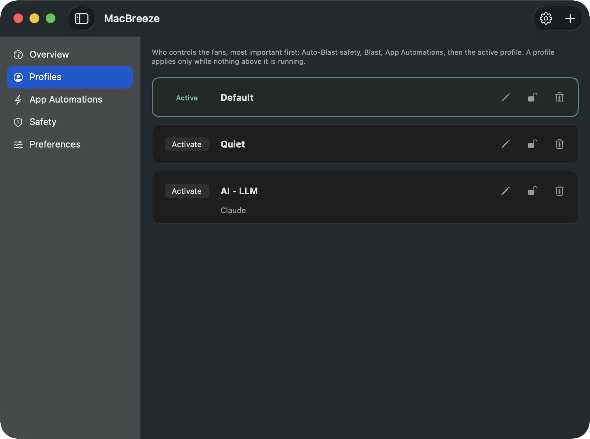
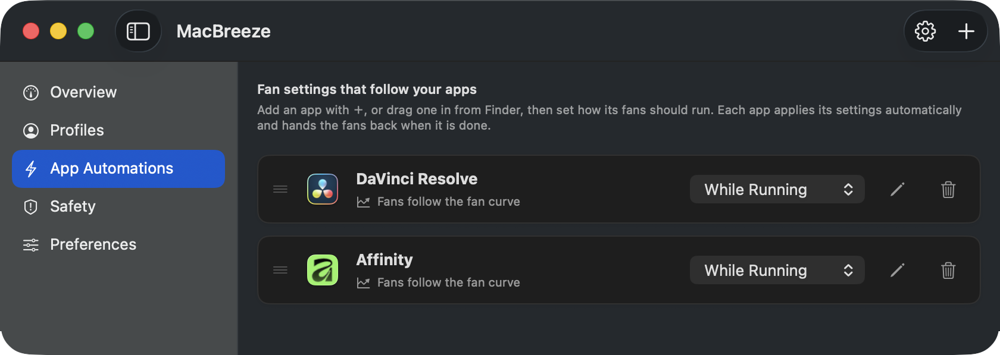
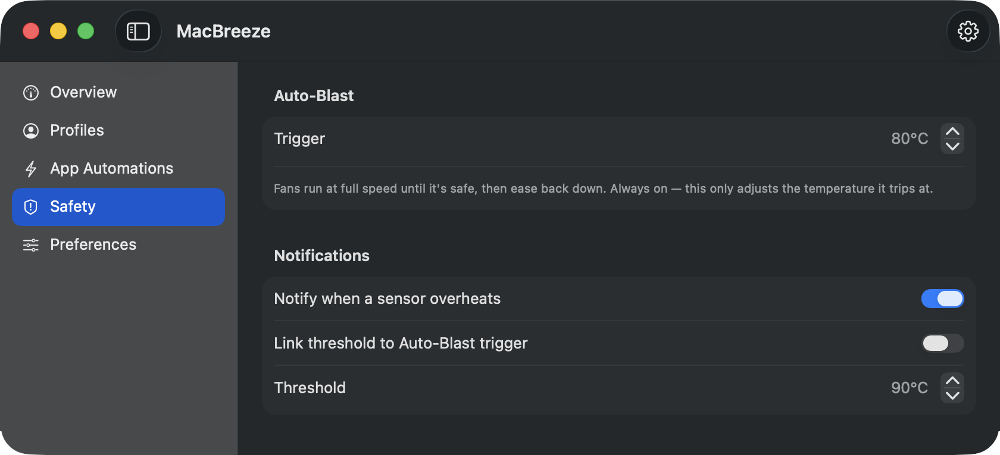
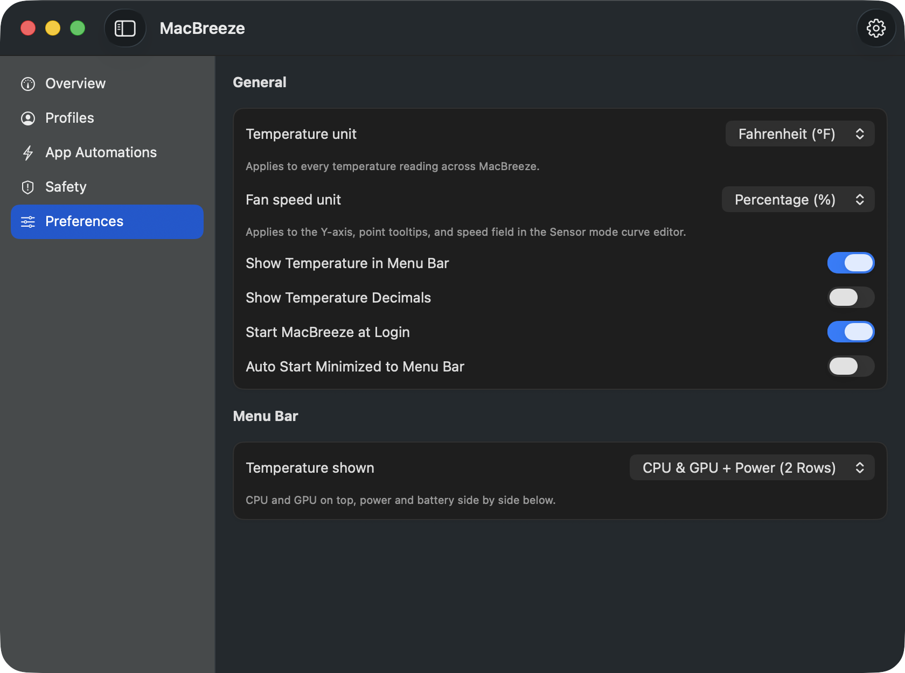

You’ll never think about your fans again.
MacBreeze watches your CPU, GPU, and battery, then manages your fans automatically — quiet on a call, full speed the moment it’s needed.
Free to download and free to keep. Every install starts with 14 days of Pro, no card required.
macOS 14 Sonoma or later · Apple Silicon
Everything your fans need. Nothing you have to manage.
Auto-Blast safety net Free, always
If things get too hot, MacBreeze locks your fans at full speed automatically, then eases back down once it’s genuinely safe again. It runs even when the app is closed, it can’t be switched off, and it overrides everything else you’ve set.
Per-app automation
Assign a fan profile to any app. It switches the moment that app opens or quits. Free includes 1 automation and 2 profile slots — Pro is unlimited, with priority ordering when profiles overlap.
Full sensor monitoring Free, always
CPU, GPU, battery, per-core temperatures, and live energy draw — measured and shown right in your menu bar.
Visual fan curves Pro
Drag points on a live temperature-to-speed graph and watch it respond to your CPU, GPU, and battery in real time.
Fan profiles
Save named speed profiles for gaming, calls, or rendering, then switch between them instantly. Free includes 2 slots, Pro is unlimited.
Works on every Apple Silicon Mac
MacBreeze detects your hardware automatically, including fanless MacBook Air and Neo models, which get a free monitoring-only view.
Set it once. It runs itself.
Pick a fan profile for any app — Premiere Pro, DaVinci Resolve, Photoshop, or whatever else tends to run hot. Choose whether it holds for as long as the app is running, or only while you’re actually working in it. MacBreeze switches the moment the app opens, switches back the moment you quit, and picks up apps that were already open when it started.
While an automation is driving your fans, the manual controls lock rather than accept a change the automation would overwrite a second later. Blast is the one exception — with a hot Mac in front of you, it still overrides everything.
Free includes 1 active app automation. Pro unlocks unlimited automations, and lets you drag them into priority order — when two apps are open at once, the rule nearest the top wins.
Your rules, in priority order
- DaVinci Resolve While running Driving fans
- Premiere Pro While running Open
- Photoshop While frontmost Closed
DaVinci Resolve’s profile is running the fans
Two apps match at once, so the higher rule wins. Drag Premiere above it and the fans follow, immediately.
Three ways to run your fans. One that overrides them.
Auto leaves them to macOS. Manual pins a speed and holds it. Sensor follows a temperature curve you draw. Blast takes every fan to full until you let go, then hands them back exactly as you had them. Try it below — the readings are simulated, not your Mac.
Speed follows the system automatically.
Locked by App Automation — is running.
Auto — macOS drives the fans on its own.
A closer look inside MacBreeze.






Simple pricing. Own it once.
No subscription. Monitoring and fan control stay free for everyone — these two plans lift the limits on profiles and per-app automations, and add visual sensor curves.
Pro
$15
One Mac, forever.
- Full monitoring, manual fan control, and Auto-Blast
- Visual sensor curves — drag temperature-to-speed graphs
- Unlimited fan profiles
- Unlimited per-app automations, with priority ordering
- Custom overheat threshold
- 14-day free trial, no card required
4-Pack
$60$45
Up to 4 Macs at once — 4 for the price of 3.
- Everything in Pro
- Covers up to 4 Macs at the same time
- Ideal for a household or a small team
Free vs. Pro
Every feature, side by side. The free version is not a demo — it keeps working for as long as you want it.
| Feature | Free | Pro |
|---|---|---|
| Full sensor monitoring & menu bar readout | Included | Included |
| Fanless Mac experience | Included | Included |
| Manual fan control | Included | Included |
| Blast mode & Auto-Blast safety net | Included | Included |
| Profiles | 2 slots | Unlimited |
| Per-app automations | 1 active | Unlimited |
| Visual sensor curves | Not included | Included |
| Overheat notifications, custom threshold | Not included | Included |
Frequently asked questions
The details people usually ask about before they buy.
Controlling fan speed needs a small privileged helper — macOS’s standard way of allowing safe, limited hardware access. MacBreeze installs it with one click and one password prompt, the same dialog you’d see installing any Mac utility. Monitoring alone needs no special access at all.
Yes. A safety cap is built in and always on: the target temperature tops out at 95°C, and if your Mac reaches it, Auto-Blast runs the fans at full speed until it cools to 85°C. That safeguard is included for every user.
MacBreeze drops to the Free tier. Full monitoring, manual fan control, and Auto-Blast keep working. You keep 2 profile slots and 1 active automation; anything beyond that is locked, not deleted, and unlocks instantly the moment you buy Pro.
Your license works on one Mac at a time, and moving it is free — just sign in on the new machine, as often as you like, as long as it can check in online. You can also link a license permanently to one Mac for full offline use, but that’s irreversible: that Mac keeps its slot forever, so if it’s sold or replaced the slot goes with it, and a linked license can no longer be refunded. On a 4-Pack each Mac is linked separately, and if you link all four the license is frozen — no Mac can be added, removed or swapped after that.
Yes. Email us within 14 days of buying and we’ll refund you in full, no questions asked. There’s also a 14-day free trial before you pay anything, so you can check MacBreeze works on your Mac first.
One exception: if you permanently link a Mac for offline use, that licence is no longer refundable. Linking is irreversible and leaves MacBreeze unlocked on that machine forever, with nothing left for us to take back. On a 4-Pack this applies to the whole licence — linking any one of the four ends the refund for all of them.
You never have to link a Mac. It’s optional, MacBreeze works normally without it, and the app explains the consequences and asks you to confirm before anything happens.
Yes. MacBreeze detects fanless Macs automatically and switches to a monitoring-only view. Since there are no fans to control, it’s fully free on those machines.